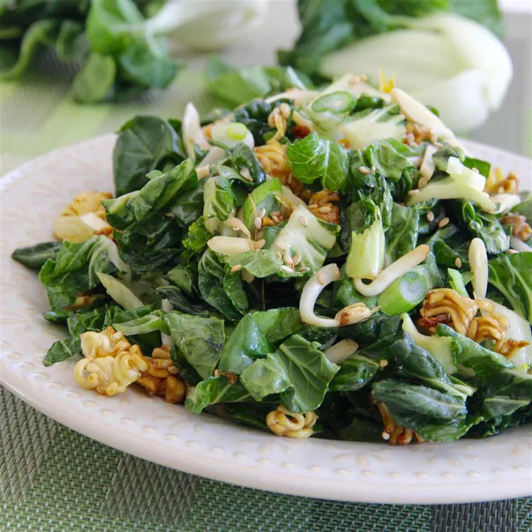

Bok Choy Ramen Salad

Description
This bok choy ramen salad, with crunchy ramen noodles, bok choy, nuts, and seeds in a sweet soy vinaigrette, tastes
amazing and is easy to whip up for a satisfying lunch.
Ingredients
- ½ cup canola oil
- ½ cup white sugar
- ¼ cup red wine vinegar
- 2 tablespoons soy sauce
- ¼ cup unsalted butter
- 2 tablespoons white sugar
- 2 (3 ounce) packages ramen noodles including flavor packets
- ½ cup sesame seeds
- 3 ounces slivered almonds
- 1 tablespoon soy sauce
- 2 large heads bok choy, chopped
- 6 green onions, chopped
Steps
- Whisk canola oil, 1/2 cup sugar, red wine vinegar, and 2 tablespoons soy sauce together in a bowl.
- Melt butter in a saucepan over low heat; add 2 tablespoons sugar and stir until dissolved. Crumble ramen noodles
into
butter mixture, then stir in ramen seasoning packets, sesame seeds, almonds, and 1 tablespoon soy sauce; cook
until
lightly toasted, stirring constantly to prevent burning, 2 to 3 minutes. Remove from heat.
- Toss vinaigrette, ramen mixture, bok choy, and green onions together in a large bowl.
Home